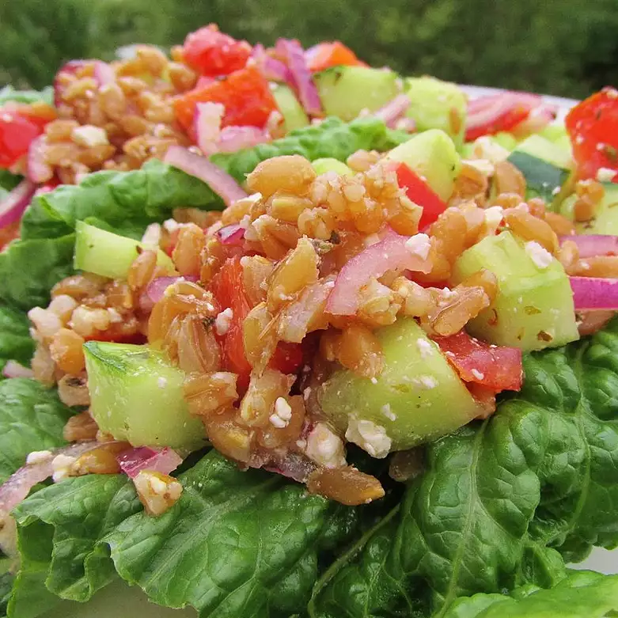

Greek Farro Salad
Home

Description:
This is a great alternative to a cold pasta salad as farro doesn't get soggy and holds up to the dressing very well. Farro is an ancient Mediterranean grain, so I wanted to merge it with a Greek-style salad that's perfect for summertime. This is great served with grilled lamb or chicken. Add black olives or fresh herbs to your liking!
Ingredients:
- 1 1/2 cups farro
- 4 cups chicken broth
- 1 teaspoon olive oil
- 1 teaspoon sea salt, or to taste
- 1/4 cup extra-virgin olive oil
- 3 tablespoons fresh lemon juice
- 1 tablespoon Greek seasoning
- 1 clove garlic, minced
- 1 cup seeded, diced tomato
- 1 cup seeded, diced cucumber
- 1 cup chopped red bell pepper
- 3/4 cup thinly sliced red onion
- 1 cup crumbled feta cheese
- salt and ground black pepper to taste
Steps:
- Rinse farro with water; drain. Place farro in a pot; pour in chicken broth to cover farro by at least one inch, adding water if needed. Stir in 1 teaspoon olive oil and sea salt.
- Bring liquid to a boil; reduce heat to medium and simmer, uncovered, stirring frequently, until tender, about 35 minutes for whole grain farro or about 20 minutes for pearled farro.
- Drain farro, rinse with cold water, and set aside to cool completely, about 15 minutes.
- Whisk 1/4 cup extra-virgin olive oil, lemon juice, Greek seasoning, and garlic together in a large bowl. Stir in tomato, cucumber, red pepper, red onion, and feta cheese. Stir farro into tomato mixture until completely coated with dressing; season with salt and pepper. Refrigerate salad for about 2 hours before serving.